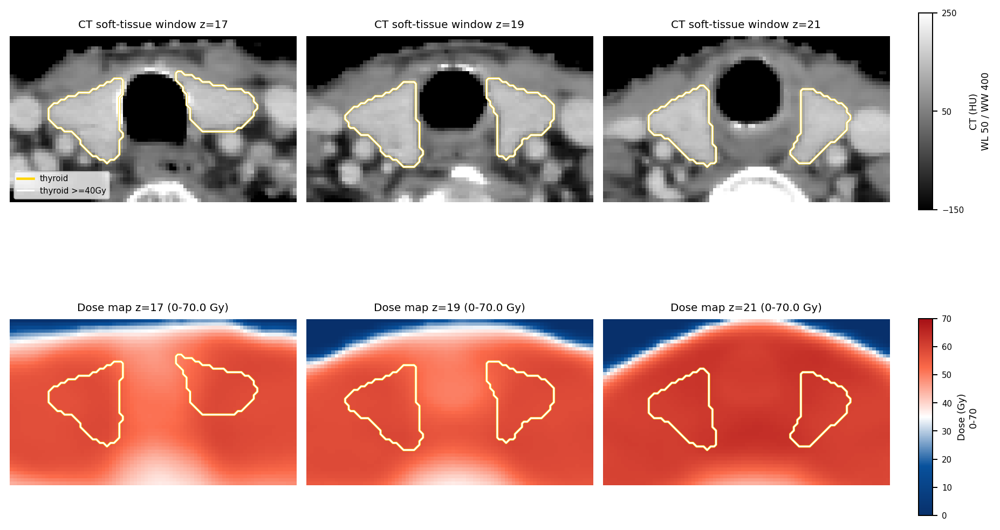

| metric | value |
|---|---|
| Thyroid Dmean (Gy) | 59.5777 |
| Thyroid volume (cc) | 20.0151 |
| Thyroid Dmax (Gy) | 66.6474 |
| Thyroid Dmin (Gy) | 48.0882 |
| Thyroid D2 (Gy) | 65.7673 |
| Thyroid D50 (Gy) | 58.6166 |
| Thyroid D95 (Gy) | 53.6422 |
| Thyroid V5 (%) | 100.0000 |
| Thyroid V5 (cc) | 20.0151 |
| Thyroid VS5 (cc) | 0.0000 |
| Thyroid V10 (%) | 100.0000 |
| Thyroid V10 (cc) | 20.0151 |
| Thyroid VS10 (cc) | 0.0000 |
| Thyroid V15 (%) | 100.0000 |
| Thyroid V15 (cc) | 20.0151 |
| Thyroid VS15 (cc) | 0.0000 |
| Thyroid V20 (%) | 100.0000 |
| Thyroid V20 (cc) | 20.0151 |
| Thyroid VS20 (cc) | 0.0000 |
| Thyroid V25 (%) | 100.0000 |
| Thyroid V25 (cc) | 20.0151 |
| Thyroid VS25 (cc) | 0.0000 |
| Thyroid V30 (%) | 100.0000 |
| Thyroid V30 (cc) | 20.0151 |
| Thyroid VS30 (cc) | 0.0000 |
| Thyroid V35 (%) | 100.0000 |
| Thyroid V35 (cc) | 20.0151 |
| Thyroid VS35 (cc) | 0.0000 |
| Thyroid V40 (%) | 100.0000 |
| Thyroid V40 (cc) | 20.0151 |
| Thyroid VS40 (cc) | 0.0000 |
| Thyroid V45 (%) | 100.0000 |
| Thyroid V45 (cc) | 20.0151 |
| Thyroid VS45 (cc) | 0.0000 |
| Thyroid V50 (%) | 99.6369 |
| Thyroid V50 (cc) | 19.9424 |
| Thyroid VS50 (cc) | 0.0727 |
| Thyroid V55 (%) | 91.7185 |
| Thyroid V55 (cc) | 18.3576 |
| Thyroid VS55 (cc) | 1.6575 |
| Thyroid V60 (%) | 32.2614 |
| Thyroid V60 (cc) | 6.4572 |
| Thyroid VS60 (cc) | 13.5580 |
| Thyroid V65 (%) | 10.9267 |
| Thyroid V65 (cc) | 2.1870 |
| Thyroid VS65 (cc) | 17.8281 |
| Thyroid V70 (%) | 0.0000 |
| Thyroid V70 (cc) | 0.0000 |
| Thyroid VS70 (cc) | 20.0151 |
| Thyroid V30-60 (%) | 67.7386 |
| Thyroid V30-60 (cc) | 13.5580 |
| horizon | years | risk |
|---|---|---|
| 1y | 1.0 | 0.0121 |
| 2y | 2.0 | 0.0357 |
| 3y | 3.0 | 0.0697 |
| 4y | 4.0 | 0.0896 |
| 5y | 5.0 | 0.1439 |
| 6y | 6.0 | 0.1945 |
| 7y | 7.0 | 0.2950 |
| 8y | 8.0 | 0.3602 |
| 9y | 9.0 | 0.4409 |
| all | all | 0.4409 |
Yellow=thyroid, red=target, white=thyroid dose >=40 Gy.
Thyroid volume: 20.02 cc Thyroid Dmean: 59.58 Gy

| target_available | target_mask_count | target_mask_names | hotspot_threshold_cgy | thyroid_volume_cc | thyroid_dmean_gy | thyroid_dmax_gy | hotspot_volume_cc | hotspot_fraction_of_thyroid_pct | thyroid_to_target_min_distance_mm | hotspot_to_target_min_distance_mm | thyroid_target_overlap_cc | thyroid_target_overlap_pct_of_thyroid | shell_0_3mm_mean_cgy | shell_0_3mm_max_cgy | shell_0_3mm_voxels | shell_3_6mm_mean_cgy | shell_3_6mm_max_cgy | shell_3_6mm_voxels | shell_6_10mm_mean_cgy | shell_6_10mm_max_cgy | shell_6_10mm_voxels | shell_10_20mm_mean_cgy | shell_10_20mm_max_cgy | shell_10_20mm_voxels | optimizable_class |
|---|---|---|---|---|---|---|---|---|---|---|---|---|---|---|---|---|---|---|---|---|---|---|---|---|---|
| 1.0000 | 1.0000 | PTV_70Gy_mask.mha | 4000.0000 | 20.0151 | 59.5777 | 66.6474 | 20.0151 | 100.0000 | 3.1865 | 3.1865 | 0.0000 | 0.0000 | 5885.5112 | 6877.2080 | 4494.0000 | 5781.4829 | 7335.6621 | 9154.0000 | 5444.3530 | 7392.4019 | 16924.0000 | 4276.4111 | 7428.2671 | 61112.0000 | limited_optimizable_near_target |
| scenario | base 3y | cf 3y | delta 3y | 3y reduction pp | base 7y | cf 7y | delta 7y | 7y reduction pp | base all | cf all | delta all | all reduction pp | Dmean change % |
|---|---|---|---|---|---|---|---|---|---|---|---|---|---|
| Whole dose map x0.90 | 0.0697 | 0.0603 | -0.0094 | 0.9417 | 0.2950 | 0.2598 | -0.0352 | 3.5181 | 0.4409 | 0.3937 | -0.0472 | 4.7170 | -10.0000 |
| Whole dose map x0.80 | 0.0697 | 0.0521 | -0.0176 | 1.7597 | 0.2950 | 0.2281 | -0.0669 | 6.6862 | 0.4409 | 0.3499 | -0.0909 | 9.0942 | -20.0000 |
| Thyroid voxels >40 Gy x0.80 | 0.0697 | 0.0532 | -0.0166 | 1.6563 | 0.2950 | 0.2322 | -0.0628 | 6.2799 | 0.4409 | 0.3556 | -0.0853 | 8.5261 | -20.0000 |
| Soft >40 Gy cap x0.80, tau=2 Gy, Gaussian 3 mm | 0.0697 | 0.0583 | -0.0115 | 1.1492 | 0.2950 | 0.2519 | -0.0431 | 4.3120 | 0.4409 | 0.3828 | -0.0580 | 5.8024 | -13.2856 |
| feature | raw_value | scaled_value |
|---|---|---|
| radiomics_log-sigma-3-mm-3D_glrlm_GrayLevelNonUniformity | 361.5816 | 0.2053 |
| radiomics_original_gldm_GrayLevelNonUniformity | 765.7462 | 0.0783 |
| radiomics_wavelet-LHL_ngtdm_Strength | 0.7826 | 0.1368 |
| dosiomics_original_shape_MeshVolume | 19849.7359 | 0.2332 |
| dosiomics_wavelet-HLH_gldm_GrayLevelNonUniformity | 2009.1376 | 0.4453 |
| dosiomics_wavelet-LLH_gldm_GrayLevelNonUniformity | 469.0204 | 0.2719 |
| dosiomics_wavelet-HLL_ngtdm_Coarseness | 0.0018 | 0.0165 |
| Age | 55.0000 | 0.5331 |
| N-stage | 2.0000 | 0.6667 |
| Thyroid Dmean (Gy) | 59.5777 | 0.8167 |
One row per published formula or boundary rule implemented from the Table S2 reproduction code. The risk column shows the patient-level call; fail means the required inputs are unavailable.
| model | value | risk_call | paper | formula | note |
|---|---|---|---|---|---|
| NTCP_Boomsma2012 | 0.476 | low-risk | Boomsma et al. 2012 | sigmoid(0.011 + 0.062*DmeanGy - 0.19*VolumeCc) | Probability-style NTCP model using Dmean and thyroid volume. |
| NTCP_Ronjom2013 | 0.484 | low-risk | Ronjom et al. 2013 | sigmoid(-1.235 + 0.1162*DmeanGy - 0.2873*VolumeCc) | Probability-style NTCP model using Dmean and thyroid volume. |
| Bakhshandeh2013_Zhai2022_Dmean_ge45 | 59.578 | high-risk | Bakhshandeh et al. 2013; Zhai et al. 2022 | Thyroid Dmean (Gy) >= 45 | Dose-volume rule: mean thyroid dose >=45 Gy indicates elevated risk. |
| Sachdev2014_V50_ge60pct | 99.637 | high-risk | Sachdev et al. 2014 | Thyroid V50 (%) >= 60 | Dose-volume rule: V50 >=60% has been reported as an elevated-risk threshold. |
| Zhai2022_V40_gt80pct | 100.000 | high-risk | Zhai et al. 2022 | Thyroid V40 (%) > 80 | Planning-style rule: V40 >80% flags elevated thyroid dose burden. |
| Lee2016_Zhai2022_VS45_lt5cc | 0.000 | high-risk | Lee et al. 2016; Zhai et al. 2022 | Thyroid VS45 (cc) < 5 | Sparing-volume rule: VS45 <5 cc indicates inadequate thyroid sparing. |
| Lee2016_Lertbutsayanukul2018_VS60_lt10cc | 13.558 | low-risk | Lee et al. 2016; Lertbutsayanukul et al. 2018 | Thyroid VS60 (cc) < 10 | Sparing-volume rule: VS60 <10 cc indicates inadequate high-dose sparing. |
| Chow2022_VS60_lt10cc | 13.558 | low-risk | Chow et al. 2022 | Thyroid VS60 (cc) < 10 | Table S2 boundary implementation: high risk if thyroid sparing volume receiving <60 Gy is <10 cc. |
| Xu2023_V40_gt85_binary | 100.000 | high-risk | Xu et al. 2023 | Thyroid V40 (%) > 85 | Table S2 boundary implementation: high risk if V40 >85%; V40 <=85% corresponds to the protected constraint group. |
| Zhou2020_V50_gt24_binary | 99.637 | high-risk | Zhou et al. 2020 | Thyroid V50 (%) > 24 | Table S2 boundary implementation: high risk if thyroid V50 >24%. |
| Zhou2020_Nstage_TV12p82_V50_ordinal | 2.000 | high-risk | Zhou et al. 2020 | I(N-stage>1) + I(Volume<=12.82cc) + I(V50>24%) | Table S2 ordinal implementation from the published clinical-DVH risk factors. |
| Peng2020_TV20_V30_60_80_ordinal | 0.000 | low-risk | Peng et al. 2020 | if Volume>20cc: score 0; else if V30-60<=80%: score 1; else score 2 | Peng2020 stratum: thyroid volume >20 cc. |
| Peng2020_TV_le20_binary | 0.000 | low-risk | Peng et al. 2020 | High risk = thyroid volume <=20 cc | Table S2 boundary sensitivity using thyroid volume alone. |
| Peng2020_TVle20_V30_60gt80_binary | 0.000 | low-risk | Peng et al. 2020 | High risk = thyroid volume <=20 cc and V30-60 >80% | Table S2 highest-risk boundary sensitivity. |